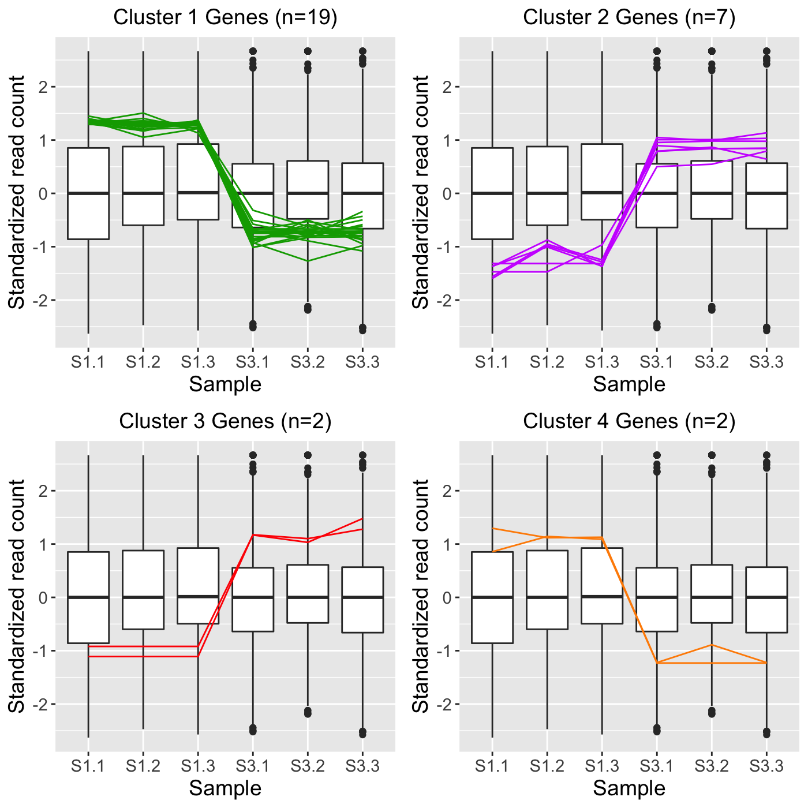

Perform hierarchical clustering analysis and visualize results with parallel coordinate plots. Optionally, save gene IDs within each cluster to .rds files for later use.
plotClusters(data, dataMetrics = NULL, geneList = NULL, geneLists = NULL, threshVar = "FDR", threshVal = 0.05, clusterAllData = TRUE, nC = 4, colList = rainbow(nC), aggMethod = c("ward.D", "ward.D2", "single", "complete", "average", "mcquitty", "median", "centroid"), yAxisLabel = "Count", xAxisLabel = "Sample", lineSize = 0.1, lineAlpha = 0.5, vxAxis = FALSE, outDir = tempdir(), saveFile = TRUE, verbose = FALSE)
| data | DATA FRAME | Read counts |
|---|---|
| dataMetrics | LIST | Differential expression metrics; default NULL |
| geneList | CHARACTER ARRAY | Array of ID values of genes to be drawn from data as parallel coordinate lines. Use this parameter if you have predetermined genes to be drawn. These genes will be clustered. Otherwise, use dataMetrics, threshVar, and threshVal to create clusters to be overlaid as parallel coordinate lines; default NULL. See package website for examples |
| geneLists | LIST | List of ID values of genes already clustered to be #' drawn from data as parallel coordinate lines. Each list item is an array of genes ID values that are already grouped as a cluster. Unlike the singular geneList object, the plural geneLists object is not be clustered. If you instead wish to cluster genes, use dataMetrics, threshVar, and threshVal or geneList to create clusters to be overlaid as parallel coordinate lines; default NULL. See package website for examples |
| threshVar | CHARACTER STRING | Name of column in dataMetrics object that is used to threshold significance; default "FDR" |
| threshVal | INTEGER | Maximum value to threshold significance from threshVar object; default 0.05 |
| clusterAllData | BOOLEAN [TRUE | FALSE] | Create clusters based on the whole dataset and then assign significant genes to those clusters; default is TRUE. If FALSE, create clusters based on just the significant genes. With either option, the side-by-side boxplot will represent the whole dataset (from data input) and the parallel coordinate lines will represent only the significant genes (those that pass threshVal for threshVar) |
| nC | INTEGER | Number of clusters; default 4 |
| colList | CHARACTER ARRAY | List of colors for each cluster; default is rainbow(nC) |
| aggMethod | CHARACTER STRING ["ward.D" | "ward.D2" | "single" | "complete" | "average" | "mcquitty" | "median" | "centroid"] | The agglomeration method to be used in the hierarchical clustering; default "ward.D" |
| yAxisLabel | CHARACTER STRING | Vertical axis label; default "Count" |
| xAxisLabel | CHARACTER STRING | Horizontal axis label; default "Sample" |
| lineSize | INTEGER | Size of plotted parallel coordinate lines; default 0.1 |
| lineAlpha | INTEGER | Alpha value of plotted parallel coordinate lines, default 0.5 |
| vxAxis | BOOLEAN [TRUE | FALSE] | Flip x-axis text labels to vertical orientation; default FALSE |
| outDir | CHARACTER STRING | Output directory to save all images; default tempdir() |
| saveFile | BOOLEAN [TRUE | FALSE] | Save file to outDir; default TRUE |
| verbose | BOOLEAN [TRUE | FALSE] | Print each cluster from each cluster size into separate files and print the associated IDs of each cluster from each cluster size into separate .rds files; default is FALSE |
List of n elements each containing a grid of parallel coordinate plots, where n is the number of treatment pair combinations in the data object. If the saveFile parameter has a value of TRUE, then each grid of parallel coordinate plots is saved to the location specified in the outDir parameter as a JPG file. If the verbose parameter has a value of TRUE, then a JPG file for each parallel coordinate plot in each grid, RDS file containing the superimposed IDs for each parallel coordinate plot in each grid, and the JPG file of each grid of parallel coordinate plots is saved to the location specified in the outDir parameter.
# Example 1: Perform hierarchical clustering of size four using the # default agglomeration method "ward.D". Cluster only on the genes that have # FDR < 1e-7 (n = 113) and overlay these genes. library(grid) library(matrixStats) library(ggplot2) data(soybean_ir_sub) soybean_ir_sub[,-1] <- log(soybean_ir_sub[-1]+1) data(soybean_ir_sub_metrics) colList = c("#00A600FF", rainbow(5)[c(1,4,5)]) ret <- plotClusters(data=soybean_ir_sub, dataMetrics = soybean_ir_sub_metrics, nC=4, colList = colList, clusterAllData = FALSE, threshVal = 1e-7, saveFile = FALSE) grid.draw(ret[["N_P_4"]])# Example 2: Perform the same analysis, only now create the four groups by # clustering on all genes in the data (n = 5,604). Then, overlay the genes # that have FDR < 1e-7 (n = 113) into their corresponding clusters. ret <- plotClusters(data=soybean_ir_sub, dataMetrics = soybean_ir_sub_metrics, nC=4, colList = colList, clusterAllData = TRUE, threshVal = 1e-7, saveFile = FALSE) grid.draw(ret[["N_P_4"]])# Example 3: Perform the same analysis, only now overlay all genes in the # data by keeping the dataMetrics object as its default value of NULL. ret <- plotClusters(data=soybean_ir_sub, nC=4, colList = colList, clusterAllData = TRUE, saveFile = FALSE) grid.draw(ret[["N_P_4"]])# Example 4: Visualization of gene clusters is usually performed on # standardized data. Here, hierarchical clustering of size four is performed # using the agglomeration method "average" on standardized data. Only genes # with FDR < 0.05 are used for the clustering. Only two of the three # pairwise combinations of treatment groups (S1 and S2; S1 and S3) have any # genes with FDR < 0.05. The output plots for these two pairs are examined. data(soybean_cn_sub) data(soybean_cn_sub_metrics) soybean_cn_sub_st <- as.data.frame(t(apply(as.matrix(soybean_cn_sub[,-1]), 1, scale))) soybean_cn_sub_st$ID <- as.character(soybean_cn_sub$ID) soybean_cn_sub_st <- soybean_cn_sub_st[,c(length(soybean_cn_sub_st), 1:length(soybean_cn_sub_st)-1)] colnames(soybean_cn_sub_st) <- colnames(soybean_cn_sub) nID <- which(is.nan(soybean_cn_sub_st[,2])) soybean_cn_sub_st[nID,2:length(soybean_cn_sub_st)] <- 0 ret <- plotClusters(data=soybean_cn_sub_st, dataMetrics = soybean_cn_sub_metrics, nC=4, colList = c("#00A600FF", "#CC00FFFF", "red", "darkorange"), lineSize = 0.5, lineAlpha = 1, clusterAllData = FALSE, aggMethod = "average", yAxisLabel = "Standardized read count", saveFile = FALSE)#> [1] "S2_S3: There were no significant genes"names(ret)#> [1] "S1_S2_4" "S1_S3_4" "S2_S3_4"# Example 5: Run the same analysis, only now set the verbose parameter to # value TRUE. This will save images of each individual cluster, .rds files # that contain the IDs within each cluster, and images of the conglomerate # clusters to outDir (default tempdir()).# NOT RUN { plotClusters(data=soybean_cn_sub_st, dataMetrics = soybean_cn_sub_metrics, nC=4, colList = c("#00A600FF", "#CC00FFFF", "red", "darkorange"), lineSize = 0.5, lineAlpha = 1, clusterAllData = FALSE, aggMethod = "average", yAxisLabel = "Standardized read count", verbose = TRUE) # }